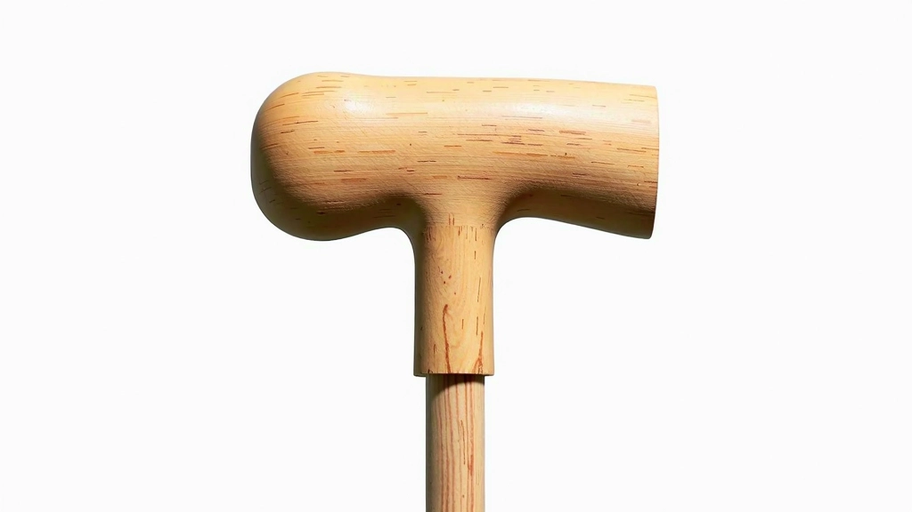
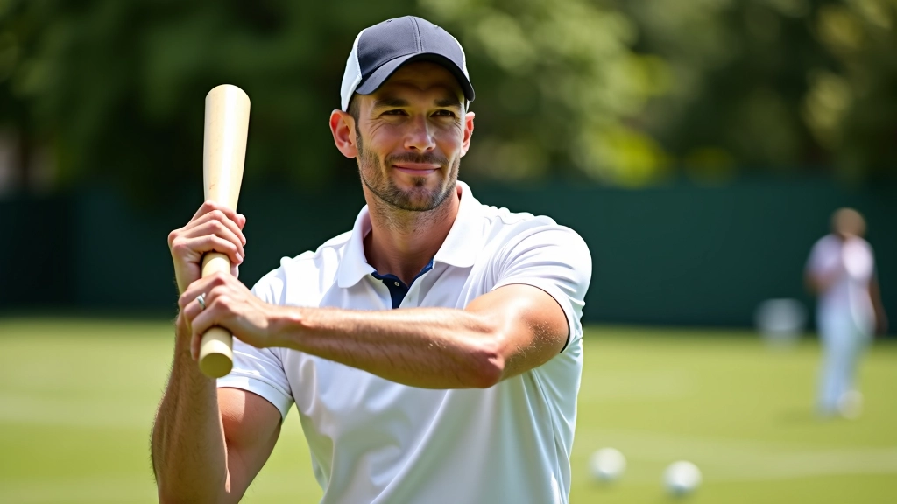
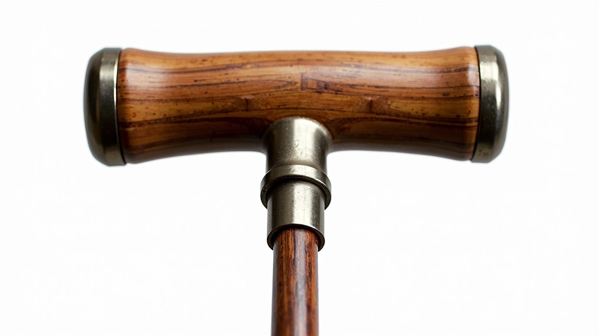

أنواع المقابض: الخشب والتركيبات الحديثة
مقارنة شاملة بين المقابض الخشبية التقليدية والمقابض المركبة الحديثة ومميزات كل منها
شرح تفصيلي لأوزان المطارق المختلفة من 680 إلى 1000 جرام وتأثير كل منها على قوتك وتحكمك

اختيار وزن المطرقة الصحيح هو من أهم القرارات في الكروكيه. ليس الأمر مجرد تفضيل شخصي — الوزن يؤثر على كل شيء من قوة ضربتك إلى دقة توجيهك. في هذا الدليل، سنشرح الفرق الحقيقي بين الأوزان المختلفة وكيف تختار ما يناسبك.
تتراوح أوزان مطارق الكروكيه بين 680 و1000 جرام تقريباً. المطرقة الخفيفة جداً (أقل من 700 جرام) تعطيك تحكماً أفضل لكن قوة أقل. أما المطرقة الثقيلة جداً (أكثر من 1000 جرام) فتعطيك قوة أكبر لكن تحكماً أقل دقة.
معظم اللاعبين يختارون مطرقة تتراوح بين 850 و950 جرام — وهذا التوازن يوفر مزيجاً جيداً من القوة والتحكم. لكن هذا لا يعني أنه الخيار الأفضل لك شخصياً. كل لاعب مختلف، والقوة البدنية والمهارة والأسلوب تلعب دوراً كبيراً.

المطرقة الخفيفة تعطيك سرعة حركة أسرع. لا تشعر بالتعب بنفس السرعة خلال جلسة اللعب الطويلة، وتستطيع عمل حركات أسرع وأكثر رشاقة. التحكم أفضل بكثير — إذا كنت دقيقاً في حركتك، ستصل الكرة إلى حيث تريدها.
المشكلة؟ القوة. عندما تريد أن تضرب الكرة بقوة على مسافة طويلة، المطرقة الخفيفة لا تعطيك نفس المسافة. ستحتاج إلى تقنية أفضل لتعويض النقص في القوة. هذا هو السبب في أن المبتدئين الشباب والنساء غالباً ما يختارون هذا الوزن — التحكم يأتي أولاً.
هنا حيث يقف معظم اللاعبين. الوزن المتوسط يوفر توازناً حقيقياً. تحصل على قوة كافية للضربات الطويلة، وتحافظ على مستوى تحكم جيد. تستطيع أن تلعب طوال اليوم دون إرهاق ذراعك بشكل مفرط.
اللاعبون المتقدمون يختارون هذا الوزن لأنهم يعرفون أنه يعطيهم المرونة. في يوم واحد قد تحتاج إلى دقة عالية، وفي يوم آخر قد تحتاج إلى قوة. المطرقة المتوسطة تتعامل مع كلا الحالتين بشكل معقول.


المطرقة الثقيلة تعطيك قوة ضربة هائلة. عندما تحتاج أن تضرب الكرة على مسافة طويلة جداً أو تتجاوز عقبة ما، الوزن الإضافي يساعدك. الكرة تذهب أبعد بنفس المجهود.
لكن هناك ثمن. ذراعك ستشعر بالتعب أسرع. التحكم يصبح أصعب — حركات صغيرة في الضربة الخفيفة تصبح أكثر صعوبة. بعض اللاعبين الكبار أو الأقوياء جداً يختارون هذا الوزن، لكنهم يدفعون ثمن الدقة.
إذا كنت قوياً جسدياً، تستطيع التعامل مع وزن أثقل بسهولة. إذا كنت ضعيف القوة أو لديك مشاكل في الذراع أو الكتف، اختر أخف.
هل تركز على الدقة والتحكم؟ اختر أخف. هل تريد قوة ومسافة أطول؟ اختر أثقل. معظم اللاعبين يختارون المتوسط.
إذا كنت تلعب ساعات طويلة، المطرقة الخفيفة ستريح ذراعك أكثر. للجلسات القصيرة، يمكنك التعامل مع وزن أثقل.
المبتدئون يستفيدون من الوزن الخفيف — التحكم أسهل. المتقدمون يستطيعون التعامل مع أي وزن بسهولة.
مقارنة شاملة بين المقابض الخشبية التقليدية والمقابض المركبة الحديثة ومميزات كل منها

نصائح عملية لاختيار الوزن المناسب بناءً على قوتك البدنية والمسافات التي تريد تحقيقها

إرشادات عملية لصيانة مطرقتك بشكل صحيح وإطالة عمرها والحفاظ على أدائها لسنوات طويلة

كتبه
فريق التحرير
كتبه فريق ملاعب الدقي التحريري، مكرس لتقديم إرشادات عملية وسهلة المتابعة عن رياضة الكروكيه.
اختيار وزن المطرقة ليس قراراً نهائياً. يمكنك أن تجرب أوزاناً مختلفة قبل أن تقرر. معظم الملاعب توفر مطارق مختلفة للاستخدام. ابدأ بالمتوسط (850-950 جرام) وشوف كيف تشعر. إذا شعرت أنك تريد أخف، جرب. إذا شعرت أنك تريد أثقل، جرب.
تذكر: الوزن يؤثر على لعبتك، لكنه ليس كل شيء. التقنية والممارسة والخبرة أهم بكثير. لا تصرف وقتاً طويلاً في البحث عن "المطرقة المثالية" — احصل على واحدة وابدأ باللعب. كل جلسة ستعلمك المزيد عما تحتاجه فعلاً.
هذا المحتوى هو لأغراض تعليمية وإعلامية فقط. الخبرات الشخصية والآراء المقدمة هنا قد تختلف حسب كل فرد. نوصي بتجربة معدات مختلفة قبل الشراء والحصول على نصيحة من لاعبين ذوي خبرة أو مدربين محترفين. كل لاعب فريد والاختيار النهائي يعتمد على احتياجاتك وتفضيلاتك الشخصية.